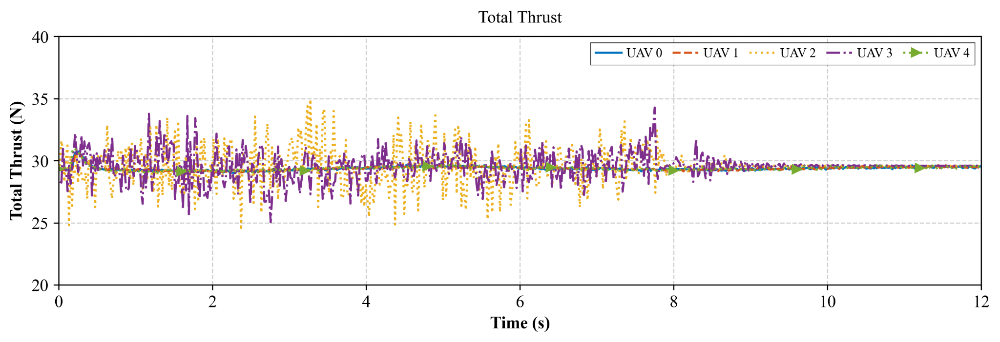

Multi-UAV Formation Control
Lead-Time Synchronized Formation Control for Multi-UAV Systems
面向复合扰动下多无人机编队同步收敛问题，设计 LTSTDO disturbance observer 与 LTSFC formation controller，完成 Lyapunov 稳定性证明和收敛时间推导。
- MATLAB 数值仿真与对比实验
- ROS / Gazebo / PX4 / Intel NUC mixed-reality HIL 平台
- 真实多无人机编队飞行与实验数据分析

Publication
ISA Transactions · Minor Revision · SCI Q1 · 第三作者
ISA Transactions · Minor Revision · SCI Q1 · 第三作者